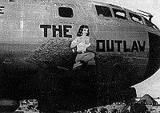

Updated 3/13/04 Click Here to Return to Index
Use your browser's BACK button to return to the previous page

19th Bombardment Group, 28th
Bombardment Squadron, Kadena AFB, Okinawa
On October 2, 1951 our crew was scheduled to test hop The Outlaw, a B-29 that had taken a hit from a MiG 15 cannon in the left outboard, #1 engine. Earlier test flights had been aborted because the combat damaged engine failed its run up check.
With the minimum required six crew members, we preflighted, fired up, and
taxied out behind an SB-17 search and rescue version of the famous WW II Flying
Fortress. A light rain began falling as we proceeded through our run up.
Our engines, including the questionable number one, checked out okay and we
were cleared to taxi into position behind the SB-17.
We watched the big tail dragger as it started its take off roll. The tail
lifted and the aircraft appeared about to become airborne when it suddenly
veered over the runway embankment into a deep ditch.
While waiting for the runway to be
cleared of debris and equipment we shut down our engines to conserve fuel. It
was lunchtime so I dug an "emergency" can of mushroom soup out of my
flight bag and placed it on an amplifier box to heat.
Before the soup was warm, however,
the SB-17 was moved enough so that we were given clearance to take off.
We restarted and rechecked the engines. Everything appeared okay, so my
Aircraft Commander, Don Thompson, said I should make the take off from the
co-pilot's position. I took the controls, advanced the throttles, and
started rolling. At about forty knots the plane began drifting left.
Our Flight Engineer, Jim Sexton, said we were losing power on number one.
Don took control and attempted to wrestle the beast into the air. Because
of our extreme light weight we'd accelerated very quickly and rotated at about
90 knots. When The Outlaw broke ground, it went into a bank to the
left. Our Left Scanner reported flames coming from #1. I hit the
emergency alarm bell, alerting the crew to brace for crash, and strained with
Don, full right aileron and rudder, in a vain attempt to level the airplane.
Over fifty years later, the memory
of those next few moments still haunt my dreams: watching the rising
terrain through that big greenhouse nose, seeing the storage tank perched atop
a slight hill that intercepted our arcing flight path.
To keep from hitting the tank and
to prevent cart wheeling from a wing digging in, Don regained directional
control by reducing power on #4, the opposite outboard engine.
Unfortunately, this left us without enough "oomph" to clear the tree
tops. The left wing clipped the storage tank and separated just outboard of
#1. We kept going, smashing though the scrubby, sub-tropical
forest. My instrument panel was jarred almost onto my lap and the
nose gun mount and bomb sights broke off and were flung between Don and
I. The nose gear strut tore the Flight Engineer's right sleeve as it was
driven into the cabin ceiling. The airplane broke in two as we went over a
slight rise, leaving "Phil" Phillips, the CFC, and our two
Scanners behind in the severed section of the aft fuselage. The forward
section came to rest in thick, tangled growth.
My can of mushroom soup hit me on
the head.
Unnerved, I attempted to exit my
sliding side window escape hatch without first shedding my parachute. For
a moment I was stuck in the window of a heavy bomber that could explode at any
second
Jim, assigned the same escape
hatch, yelled for me to punch the release, pulled the chute from my shoulders,
and pushed me out the window, falling nearly on top of me. We shoved our
way through the growth onto a taxi strip where we were almost run over by
emergency vehicles.
Moments later Don came out reeking
of gasoline. The other three finally showed up, the tail gunner, "Little
Joe" Griffin, limping from his leap to the ground, our only minor injury.
The really good news was that there'd been no other crew aboard. The bombardier most certainly would've been killed, and dislocated turrets had crushed every other unoccupied crew position. It was a miracle we did not catch fire and there were no serious injuries.
To See the Wrecked Outlaw
after being moved to the Kadena Bone Yard, <Click Here>.
(Q:Did Jane
Russell have her hand raised before the crash?)
*Bad Day at Kadena-- Although the SB-17 suffered only minor damage to two props and the right wing tip in the crash, it was later accidentally destroyed by fire during the defueling process.
SB-17 Photos Korean War B-29 Page B-29 Nose Art B-29 Snapshots
Use your browser's BACK button to return to the previous page
{kind=link}
{kind=link}